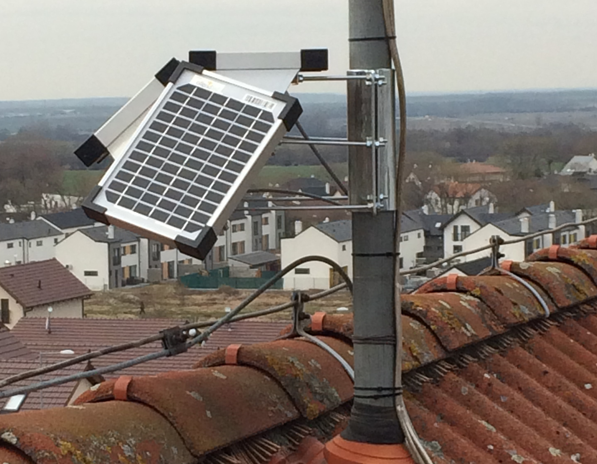
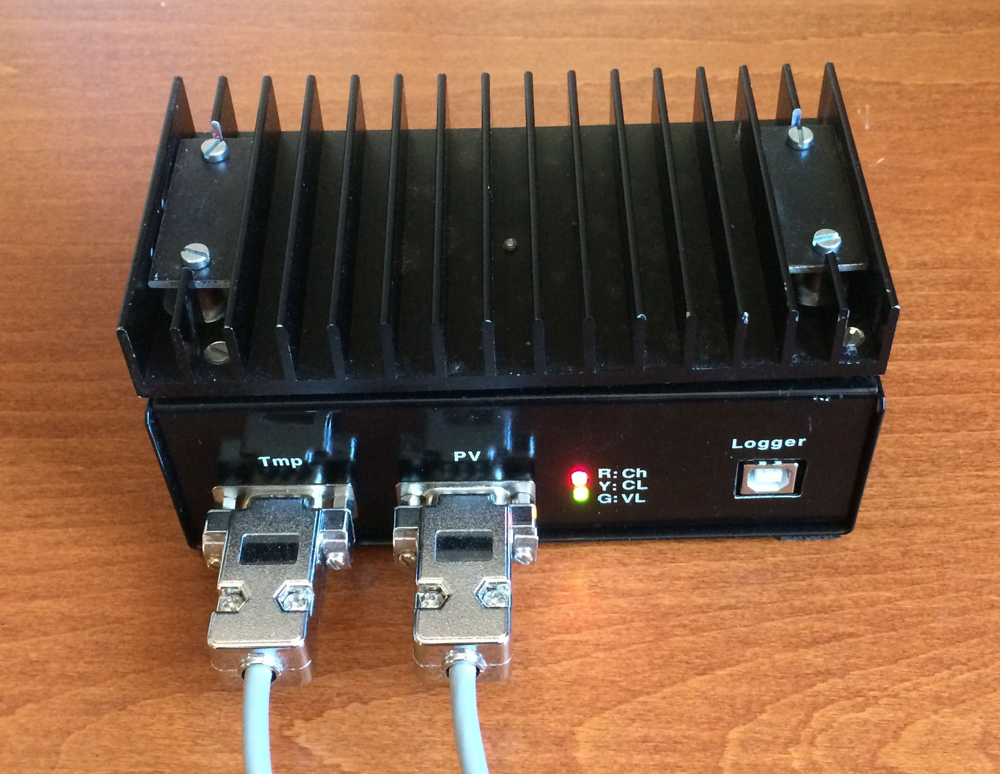
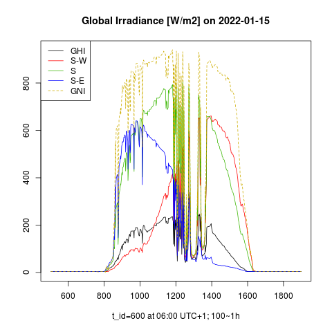
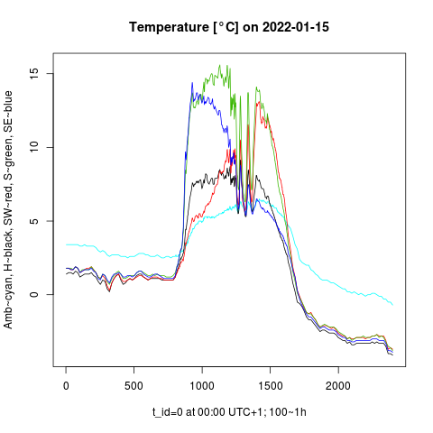

Measurement of global irradiance
Accurate measurement of the global irradiance (GI) is a prerequisite for the analysis of PV smoothing:
- Accurate nowcasting of PV power is crucial when shrinking the accumulation of energy by the PV power smoothing. PV power predictors are based on artificial intelligence (AI) and they can be trained by a sky-imagery and by the measured signal GI(t), in particular its fraction intercepted by a tilted PV panel.
- Having the measured time series GI(t), a low-pass filter can be ex-post excited by a simulated "predicted" input signal GIf(t+Δt). That is, the measured signal is left-shifted on the time axis and its values are optionally distorted by a simulated predictive error. Given such a "predicted" PV power signal and having the LPF tuned to meet a given ramping limit of output PV power, the goal is to minimize the smoothing costs by minimizing the energy accumulated by filter.
The analysis of PV smoothing puts following demands on the measurement of solar irradiance:
- Capture the whole spectrum of solar intermittency by a sufficiently high sampling frequency
- Measure the fraction of irradiance intercepted by a tilted plane of incidence (PV panel).
- Respect the physical properties of planar silicon PV panels (reflexion and spectral response)

For general purposes, the momentary solar irradiance has to be measured at any plane of incidence under given atmospheric conditions. Fulfilling all of these demands is not possible only by measuring the global (GHI) and diffused (dHI) horizontal irradiance (both of these are measured by the national weather services).
A corresponding measurement system with a data logger has been developed and installed at the author's site (48.2°, 17.1°) and is in operation since 2021/04.

The system consists of 2 units:
- external console carrying 4 reference PV panels mounted at different angles, with temperature sensors sticked onto PV panels,
- internal measurement unit serving as a MPPT controller, A/D converter of measured PV power and temperature, data logger, backup battery, PV charger, heat sink.
System features
- The reference monocrystaline silicon PV panels (sensors) have been calibrated by means of Ineichen/Perez clear-sky model , having its Linke-turbidity factor calibrated by the reference GHI, dHI measured at the near meteorological site. The PV panels are re-calibrated once a year.
- Temperature sensors are fixed onto each PV panel. The panels are always operated at their maximum output power (MPPT) . Their optimum operating point is dynamically adjusted according to the insolation and the temperature drift of their V-I characteristic. The measured output power of each panel is divided by its active surface area and by its (known) efficiency at the measured surface temperature. The result is eventually expressed as "photovoltaic global irradiance" in W/m2 analogous to GI measured at given angle of the plane of incidence, but taking into account the reflexion and spectral response of PV panels.
- Built-in data logger samples the GI values with a dynamic frequency: The sampling period varies from 0.5 second to 10 minutes, depending on the momentary solar intermittency. The whole spectrum of solar intermittency is thus recorded without redundancy. Several years of such a irregular time series occupy <1GB of memory.
- The off-grid measurement system is self-powered 24 hours x 7 days a week. In addition to the measurement, its PV sensors supply power to the data logger and charge its backup battery. The system requires a minimum maintenance.
- Simultaneous measurement of GI from 4 PV panels of size 20 cm x 16 cm mounted in different angles allows an accurate interpolation of GI at any plane of incidence assuming that the incidence vector points among the 4 fixed normal vectors (intra-normal area). For the numerical simulation of PV smoothing, the GI signal from the south-oriented PV panel is applied. Its normal vector is elevated by 47° (further refered to as PV2).

Daily (12 h) profiles of photovoltaic GI [W/m2] measured at four fixed planes of incidence. GHI corresponds to the horizontal plane while the extrapolated GNI corresponds to a virtual solar-tracked normal plane of incidence. The normal vector of GNI plane points to an extra-normal area in winter when the solar elevation is lower than the elevation of the four fixed normal vectors. The extrapolated GNI is less accurate than the interpolated one hence it is less accurate in winter.Daily (24 h) temperature profiles at PV surfaces, and the ambient temperature (cyan color).

The PV surface's temperature is mainly affected by the ambient temperature, solar irradiation, and by the wind. Since the panel temperature is higher than the sky temperature, the PV panels are always cooled by their own radiation. This effect can be observed in the night when the panels are not exposed to the solar radiation.